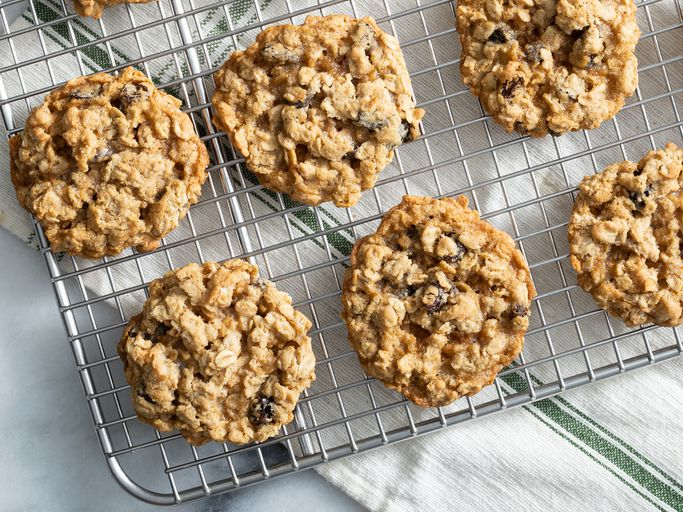

Oatmeal Raisin Cookies!

These oatmeal raisin cookies have been a favorite of my family and friends alike. Every Christmas my friend and his wife ask me if I'm going to make any of them because they love them so much.
These oatmeal raisin cookies have just a hint of cinnamon that pairs well with the sugar to make a despicably delicious eating experience. Your kids won't believe how much they love oatmeal raisin cookies!
Ingredients!
- 3/4 cup butter, softened
- 3/4 cup white sugar
- 3/4 cuper packed light brown sugar
- 2 large eggs
- 1 teaspoon vanilla extract
- 1 1/4 cups all-purpose flour
- 1 teaspoon baking soda
- 3/4 teaspoon ground cinnamon
- 1/2 teaspoon salt
- 2 3/4 cups rolled oats
- 1 cup raisins
Directions
- Gather all of the ingredients
- Preheat the oven to 375 degrees F (190 degreeg C).
- Line two cookie sheets with parchment paper or silicone liners.
- Beat butter, white sugar, and brown sugar in a large bowl until smooth and creamy. Beat in eggs and vanilla until fluffy.
- Stir together flour, baking soda, cinnamon, and salt. Gradually beat into the butter mixture. Stir in oats and raisings. Drop teaspoonfulls of cookie batter onto the prepared cookie sheets.
- Bake in the preheated oven until golden brown, about 8 to 10 minutes, switching racks halfway through. Remove from the oven and let sit on the cookie sheets for 1 to 2 minutes before transferring cookies to a wire rack to cool completely.